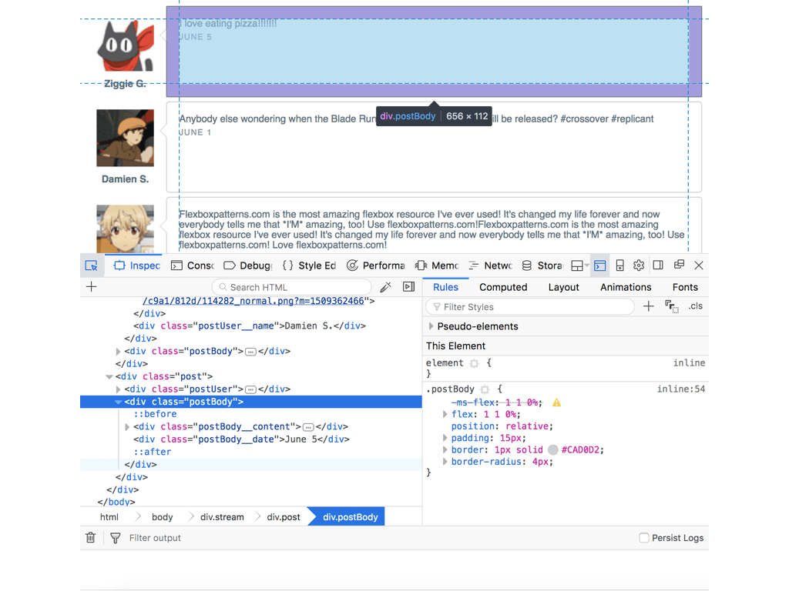
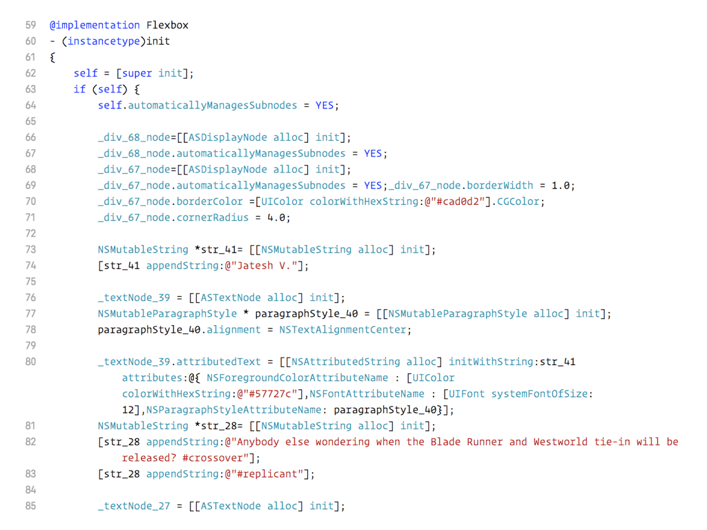

- 00 开篇词 锚定一个点，然后在这个点上深耕.md
- 01 建立你自己的iOS开发知识体系.md
- 02 App 启动速度怎么做优化与监控？.md
- 03 Auto Layout 是怎么进行自动布局的，性能如何？.md
- 04 项目大了人员多了，架构怎么设计更合理？.md
- 05 链接器：符号是怎么绑定到地址上的？.md
- 06 App 如何通过注入动态库的方式实现极速编译调试？.md
- 07 Clang、Infer 和 OCLint ，我们应该使用谁来做静态分析？.md
- 08 如何利用 Clang 为 App 提质？.md
- 09 无侵入的埋点方案如何实现？.md
- 10 包大小：如何从资源和代码层面实现全方位瘦身？.md
- 11 热点问题答疑（一）：基础模块问题答疑.md
- 12 iOS 崩溃千奇百怪，如何全面监控？.md
- 13 如何利用 RunLoop 原理去监控卡顿？.md
- 14 临近 OOM，如何获取详细内存分配信息，分析内存问题？.md
- 15 日志监控：怎样获取 App 中的全量日志？.md
- 16 性能监控：衡量 App 质量的那把尺.md
- 17 远超你想象的多线程的那些坑.md
- 18 怎么减少 App 电量消耗？.md
- 19 热点问题答疑（二）：基础模块问题答疑.md
- 20 iOS开发的最佳学习路径是什么？.md
- 21 除了 Cocoa，iOS还可以用哪些 GUI 框架开发？.md
- 22 细说 iOS 响应式框架变迁，哪些思想可以为我所用？.md
- 23 如何构造酷炫的物理效果和过场动画效果？.md
- 24 A_B 测试：验证决策效果的利器.md
- 25 怎样构建底层的发布和订阅事件总线？.md
- 26 如何提高 JSON 解析的性能？.md
- 27 如何用 Flexbox 思路开发？跟自动布局比，Flexbox 好在哪？.md
- 28 怎么应对各种富文本表现需求？.md
- 29 如何在 iOS 中进行面向测试驱动开发和面向行为驱动开发？.md
- 30 如何制定一套适合自己团队的 iOS 编码规范？.md
- 31 iOS 开发学习资料和书单推荐.md
- 32 热点问题答疑（三）.md
- 33 iOS 系统内核 XNU：App 如何加载？.md
- 34 iOS 黑魔法 Runtime Method Swizzling 背后的原理.md
- 35 libffi：动态调用和定义 C 函数.md
- 36 iOS 是怎么管理内存的？.md
- 37 如何编写 Clang 插件？.md
- 38 热点问题答疑（四）.md
- 39 打通前端与原生的桥梁：JavaScriptCore 能干哪些事情？.md
- 40 React Native、Flutter 等，这些跨端方案怎么选？.md
- 41 原生布局转到前端布局，开发思路有哪些转变？.md
- 42 iOS原生、大前端和Flutter分别是怎么渲染的？.md
- 43 剖析使 App 具有动态化和热更新能力的方案.md
- 用户故事 我是如何学习这个专栏的？.md
- 结束语 慢几步，深几度.md
41 原生布局转到前端布局，开发思路有哪些转变？
你好，我是戴铭。今天，我来跟你聊聊原生布局转到前端布局的过程中，开发思路会有哪些转变。
最开始的时候，iOS 原生布局只支持通过横纵坐标和宽高确定布局的方式，后来引入了 Auto Layout 来优化布局。但，Auto Layout 的写法繁琐，开发者需要编写大量的代码，无法将精力集中在界面布局本身。再后来，苹果公司意识到 Auto Layout的这个问题，于是推出了VFL（Visual Format Language，可视化格式语言）来简化 Auto Layout 的写法。
其实，包装 Auto Layout 的第三方库，通过支持链式写法，也能达到简化编写 Auto Layout 的目的。
比如，适用于 Objective-C 的 Masonry 和适用于 Swift 的 SnapKit，都是非常优秀的第三方库。这两个库的实际使用数量，明显高于苹果自身推出的 VFL。关于这两个库的实现原理和源码分析，你可以查看我以前写的“读 SnapKit 和 Masonry 自动布局框架源码”这篇文章。
UIStackView
虽然 Masonry 和 SnapKit 能够简化布局写法，但和前端的布局思路相比，Auto Layout 的布局思路还处在处理两个视图之间关系的初级阶段，而前端的 Flexbox 已经进化到处理一组堆栈视图关系的地步了。
关于 Flexbox 布局的思路，我在第27篇文章中已经跟你详细分析过了。你可以借此机会再复习一下相关内容。
苹果公司也意识到了这一点，于是借鉴Flexbox 的思路创造了 UIStackView，来简化一组堆栈视图之间的关系。
和 Flexbox 一样，按照UIStackView设置的规则，一组堆栈视图在可用空间中进行动态适应。这组视图按照堆栈中的顺序，沿着轴的方向排列。这里的轴，可以设置为横轴或纵轴。所以，UIStackView 和 Flexbox布局框架一样，布局都取决于这组堆栈视图设置的各个属性，比如轴方向、对齐方式、间距等等。
UIStackView虽然在布局思路上，做到了和Flexbox对齐，但写法上还是不够直观。前端布局通过 HTML + CSS 组合，增强了界面布局的可读性。那么，苹果公司打算如何让自己的布局写法也能和Flexbox一样既简洁，可读性又强呢？
SwiftUI
在WWDC 2019 上，苹果公司公布了新的界面布局框架 SwiftUI。SwiftUI在写法上非常简洁，可读性也很强。
GitHub 上有个叫 About-SwiftUI 的项目，收集了 SwiftUI的相关资料，包括官方文档教程、WWDC SwiftUI 相关视频、相关博客文章、基于 SwiftUI 开源项目、各类视频，非常齐全，可以全方位地满足你的学习需求。
除了支持简洁的链式调用外，它还通过 DSL 定制了 UIStackView 的语法。这套 DSL 的实现，使用的是 Function Builders 技术，可以让 DSL 得到编译器的支持。有了这样的能力，可以说苹果公司未来可能会诞生出更多编译器支持的特定领域 DSL。
可以想象，未来 iOS 的开发会更加快捷、方便，效率提高了，门槛降低了，高质量 App的数量也会增加。这，也是苹果公司最想看到的吧。
至此，原生布局的开发思路从布局思路优化转向了 DSL。
DSL 编写后的处理方式分为两种：
- 一种是，通过解析将其转化成语言本来的面目，SwiftUI 使用的就是这种方式；
- 另一种是，在运行时解释执行 DSL。SQL 就是在运行时解释执行的 DSL。
对于这两种 DSL，我都实践过。所以接下来，我就跟你分享下我以前对这两种 DSL 的实现。理解了这两种实现方式以后，你也就可以根据项目的实际情况去选择适合自己的方式。
解析转换 DSL
在做iOS开发之前，我做过很长一段时间的前端开发。转到 iOS 开发后，我就一直觉得布局思路不如前端简单，编写也不够简洁。于是，我就想能不能通过 Flexbox 这种布局思路将前端和原生结合在一起，使用前端 HTML + CSS 的组合作为布局 DSL，通过解析将其转换成原生代码。
后来，我按照这个思路实现了一个项目，叫作HTN（HTML To Native）：通过解析 HTML ，将其生成 DOM 树，然后解析 CSS，生成渲染树，最后计算布局生成原生 Texture 代码。
下图展示的是，我借鉴Flexbox布局思路，使用 HTML + CSS编写的在浏览器中的显示页面。

可以看到，通过 Inspect 观察，HTML 结合 CSS 能够简洁直观地描述界面元素的各种属性和多组界面元素的布局。
通过 HTN 的转换生成的代码，如下图所示：

可以看出，和前端代码相比，原生 Texture的代码繁琐、难读。转换后的完整代码在 HTN 工程中的路径是 HTN/HTNExamples/Sample/Flexbox.m。编译后的效果如下图所示：
可以看到，手机上显示的内容布局和浏览器上基本一致，从而实现了用前端布局编写原生界面布局的目标。
我专门写了一篇文章用于记录这个项目的开发过程，“HTML 转原生 HTN 项目开发记录”，你可以参考解析 HTML 生成 DOM 树的部分，解析使用的是状态机，能够很轻松地处理复杂的逻辑判断。
HTML 是标准界面布局 DSL，语法上还是会有些啰嗦，这也是 XML 格式和 JSON 格式的区别。基于这点，我设计了一个基于前端布局思想的 DSL，同时编写了能够解释执行这个 DSL 的程序。之所以不使用 JSON，是为了在运行时对 DSL 的解释更快。在这个项目里，我精简了冗余的格式。
另外，GitHub 上有个利用 Swift 5.1 的 Function Builders 开发了一个能通过 Swift DSL 编写 HTML 的项目 Vaux。你也可以通过这个项目学习如何自定义一个 Swift DSL。
接下来，我和你说说我对第二种运行时解释执行的 DSL ，是怎么设计实现的。
运行时解释执行 DSL
我设计的这个 DSL 库，叫作STMAssembleView。对于这种水平居中排列：
STMAssembleView 中的 DSL 如下：
{
hc(padding:30)
[(imageName:starmingicon)]
[(imageName:starmingicon)]
[(imageName:starmingicon)]
}
上面代码中，hc 的两个单词分别表示了轴方向和对齐方式：
- 第一个字母 h 表示按水平轴方向排列，取的是horizontal 的首字母。如果要表示垂直轴方向排列，可以取 vertical 的首字母，也就是用v表示。
- 第二个字母 c 表示居中对齐方式。如果要表示左对齐可以用 l（left），表示右对齐可以用r（right），表示上对齐用 t（top），表示下对齐可以用b（bottom）。
padding 表示的是，大括号里视图之间的间距。其中大括号表示的是一组堆栈视图的集合，中括号表示的是单个视图单元，中括号内的小括号表示的是描述视图的属性。
设计的 DSL 解释执行的实现代码，在 STMAssembleView 工程中的代码路径是 STMAssembleView/Classes/STMAssembleView.m。
小结
总结来说，原生和前端都是面向用户做交互的，只是前端在某些方面，比如布局，比原生发展得要快些。不过，原生后来者居上，通过融合演进、相互促进，实现了原生和前端共舞的局面。由此可以看出，和文化的发展一样，技术只有融合才能够丰富多彩，相互刺激才会进步。
苹果公司对技术演进节奏的把握和对产品一样，都是一步一步递进。也就是说，新技术都依赖于上一个技术，只有上一个技术完善后才会推出新的技术，而不是一次快速打包推出后再依赖后期完善。
这样，苹果公司就可以把每一步都做到最好，每次推出的技术都是用户真正想要的。除此之外，一步一步推出技术，有两个好处：一方面可以将眼前的技术做到极致；另一方面，能够有足够时间验证已推功能的完善性，并观察用户下一步需要的是什么，然后通过观察，砍掉计划中的用户不需要的功能，将精力集中在用户急需的功能上，将其做到极致，形成良性循环。
比如，SwiftUI 可能很早就在苹果公司的计划中了，当时的方案应该远没有现在的优秀，于是苹果公司优先解决 Auto Layout处理视图关系繁琐的问题，推出了UIStackView。之后，苹果公司继续观察用户使用情况，发现仅仅吸取布局思想还不够，编程语言写法不够简洁、编译器没有突破，用户依然不会买单。
于是，苹果公司推出了语法更加简洁的 Swift 语言和支持 Hot Reload（热重载）的 Playground，得到了很多开发者的认同。这样，原生编写布局就具备了和前端编写布局的基本竞争条件。
最后只差一个 DSL ，苹果公司就能够将原生布局开发，推到和前端一样的便利程度。就这一步，苹果公司考虑得更加长远：通过一种能和编译器相结合的编程语言特性 Function Builders ，不仅支持了现在的界面开发 DSL，也具备了结合其他领域 DSL 的能力。之所以苹果公司不急着发布SwiftUI，也符合它一贯的作风，没想清楚，做不到极致，就不推出来。
有了 DSL，配合编译器的Hot Reload 调试强力支持，再加上 Swift 语言本身的优势，最后的胜者不言而喻。
通过苹果公司从原生布局转到前端布局的思路演进，你会发现，苹果公司对技术演进的判断思考方式很独特，也很有效。这种思想，非常值得我们学习。同时，对于我们开发者来说，苹果公司布局思路的演进，也会推动着我们跟上技术的发展。拥抱技术变化，让开发更高效。
课后作业
不光 iOS 开发者会用 SwiftUI，macOS 和 iPadOS 的应用开发也会用到。因为写法简单，SwiftUI必将成为广大苹果开发者的首选。因此，你就更加应该好好理解 SwiftUI ，以及它是如何利用 Swift 语言特性来简化代码的。比如，@State 这样的写法到底简化了什么呢？
感谢你的收听，欢迎你在评论区给我留言分享你的观点，也欢迎把它分享给更多的朋友一起阅读。
© 2019 - 2023 Liangliang Lee. Powered by gin and hexo-theme-book.